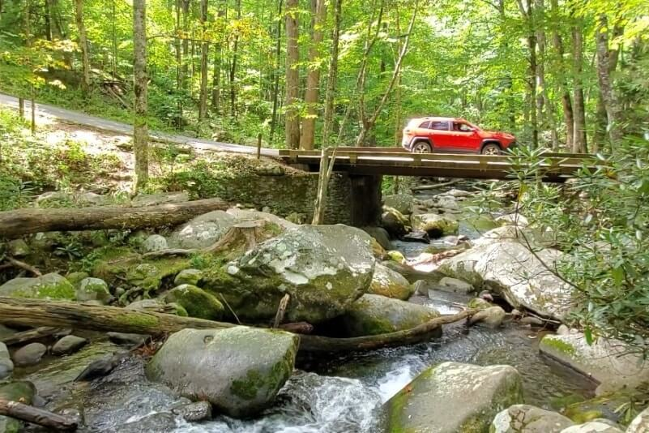
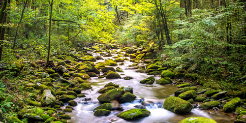

Roaring Fork
Roaring Fork is a stream in the Great Smoky Mountains of Tennessee, located in the Southeastern United States. Once the site of a small Appalachian community, today the stream's area is home to the Roaring Fork Motor Nature Trail and the Roaring Fork Historic District.
Hours

Roaring Fork is open 24 hours a day meaning visitors can come by whenever they feel to see the beauty of the Smokey Mountins. The season lasts from April 10 to November 30.
Pricing
Roaring Fork is free to public so as long as you have the time and energy, you can enjoy the trails with the family. There are walking trails and road trails for all!
